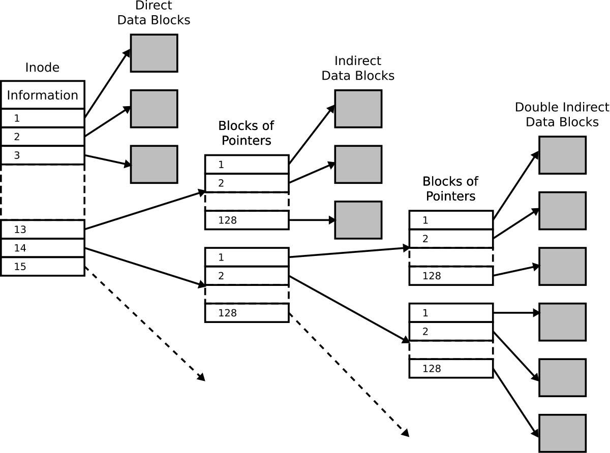
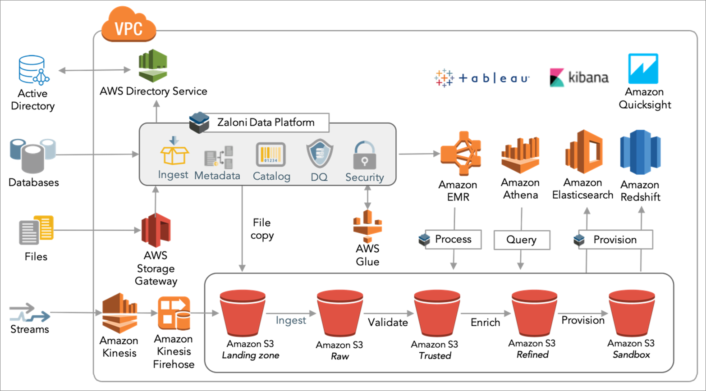
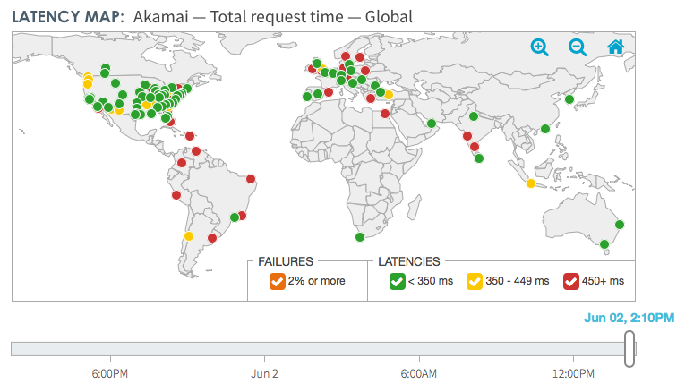
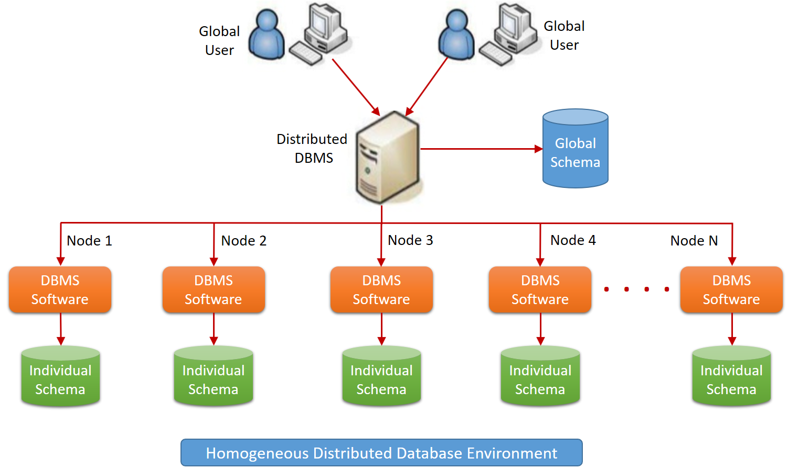
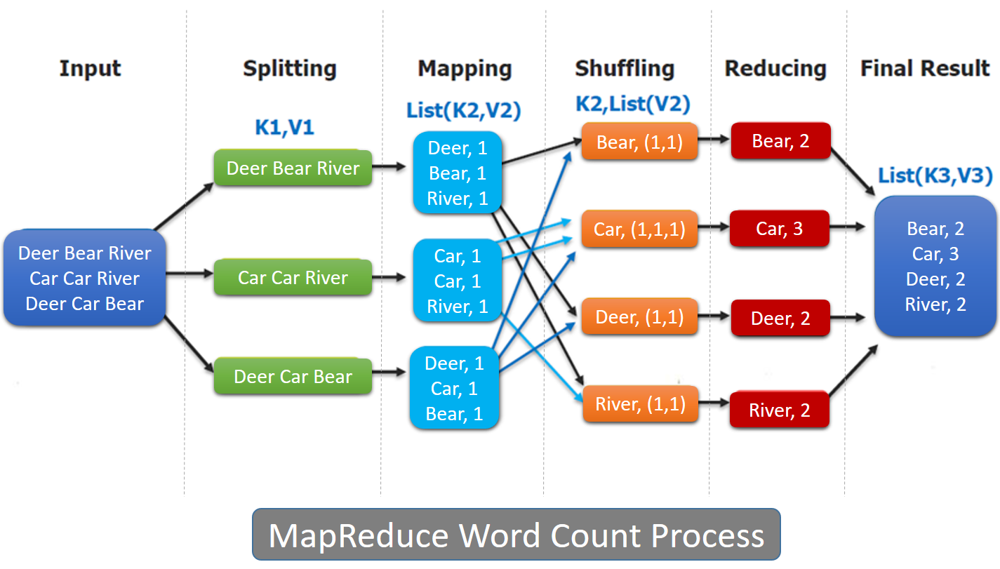
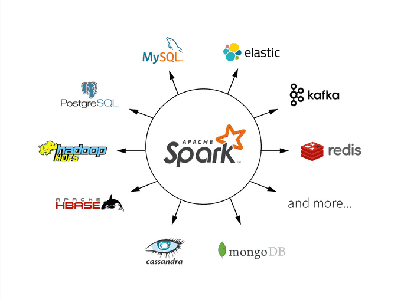

<!DOCTYPE html>
<html lang="en">

<head>
    <meta charset="utf-8" />
    <meta name="viewport" content="width=device-width, initial-scale=1.0, maximum-scale=1.0, user-scalable=no" />

    <title>Tools of Big Data</title>
    <link rel="shortcut icon" href="./favicon.ico" />
    <link rel="stylesheet" href="./dist/reveal.css" />
    <link rel="stylesheet" href="./static/css/reset.css" />
    <link rel="stylesheet" href="./static/css/evo.css" />
    <!-- <link rel="stylesheet" href="./_assets/evo" id="theme" /> -->
    <link rel="stylesheet" href="./css/highlight/vs.css" />

    <link rel="stylesheet" href="./../_assets/static/css/evo.css" />
    <link rel="stylesheet" href="./../_assets/static/css/reset.css" />

</head>

<body>
    <div class="reveal">
        <div class="slides"><section  data-markdown><script type="text/template">

## Tools of Big Data

**SDD, 2021**

Dennis WILSON

[supaerodatascience.github.io/DE](https://supaerodatascience.github.io/DE/)

</script></section><section  data-markdown><script type="text/template">

### Software as a Service


What happens when:

+ There are more clients than one server can handle?
+ There's more data than one database can store?
+ There are different data types which aren't adapted for your data?
+ You want to show live analysis of the data which integrates the user's request?

</script></section><section  data-markdown><script type="text/template">

### A growing issue

<table width="30%">
    <tr><td>1 </td><td>	B</td><td> 	byte</td></tr>
    <tr><td>1000 </td><td>	kB</td><td> 	kilobyte</td></tr>
    <tr><td>1000^2 </td><td>	MB</td><td> 	megabyte</td></tr>
    <tr><td>1000^3 </td><td>	GB</td><td> 	gigabyte</td></tr>
    <tr><td>1000^4 </td><td>	TB</td><td> 	terabyte</td></tr>
    <tr><td>1000^5 </td><td>	PB</td><td> 	petabyte</td></tr>
    <tr><td>1000^6 </td><td>	EB</td><td> 	exabyte</td></tr>
    <tr><td>1000^7 </td><td>	ZB</td><td> 	zettabyte</td></tr>
</table>


source: [IDC](https://www.seagate.com/files/www-content/our-story/trends/files/idc-seagate-dataage-whitepaper.pdf)

</script></section><section  data-markdown><script type="text/template">

### Big Data Architectures


source: [Microsoft Azure](https://docs.microsoft.com/en-us/azure/architecture/data-guide/big-data/)

</script></section><section  data-markdown><script type="text/template">

### Data Architecture Requirements

+ Availability
+ Recoverability
+ Redundancy
+ Consistency
+ Usability


How to ensure these characteristics for increasing amounts of data requiring large infrastructure?

</script></section><section  data-markdown><script type="text/template">

### File system storage



Unix [inodes](https://man7.org/linux/man-pages/man7/inode.7.html)

</script></section><section  data-markdown><script type="text/template">

### Databases


[Relational Database](https://www.researchgate.net/publication/323466947_Design_and_Analysis_of_a_Relational_Database_for_Behavioral_Experiments_Data_Processing)

</script></section><section  data-markdown><script type="text/template">

### Beyond Data

+ Store unstructured data that doesn't fit well into a database
+ Store analysis processes
+ Present different interfaces for internal and external processes


</script></section><section  data-markdown><script type="text/template">

### Silos, lakes, warehouses


[Amazon AWS](https://aws.amazon.com/big-data/datalakes-and-analytics/what-is-a-data-lake/?nc=sn&loc=2)

</script></section><section  data-markdown><script type="text/template">

### AWS Data Lake



Zaloni data lake on [AWS](https://aws.amazon.com/blogs/apn/turning-data-into-a-key-enterprise-asset-with-a-governed-data-lake-on-aws/)

</script></section><section  data-markdown><script type="text/template">

### Data analysis

+ Separable from production data manipulation
+ Transferable between test environment and hardware types
+ Access to high performance CPUs or GPUs
+ High level languages like Python
+ Visualization interface


</script></section><section  data-markdown><script type="text/template">

### Virtualization


Source: [unixtutorial.org](https://www.unixtutorial.org/hw-virtualization/)

Why is this suboptimal for machine learning pipelines?

</script></section><section  data-markdown><script type="text/template">

### Computing systems


Cloud advantage:
<br/>hardware based on component requirements

</script></section><section  data-markdown><script type="text/template">

### Cloud: the new compute paradigm


Source: [DigitalCMO](https://www.digitalcmo.fr/offre-cloud-vous-avez-de-plus-en-plus-le-choix/)

</script></section><section  data-markdown><script type="text/template">

### Data distribution



[Dyn](https://help.dyn.com/understanding-cdn-performance/) on Akamai latency

+ size of data
+ data transfer latency
+ redundancy
+ calculation parallelism

</script></section><section  data-markdown><script type="text/template">

### The problem



How do we execute a query when our data is distributed:
+ across multiple different servers?
+ across different replicas?
+ efficiently?

</script></section><section  data-markdown><script type="text/template">

### Example: word count



+ Split data tasks into distributable components
+ Define operators and manipulate them
+ Send operations between different servers
+ Use **functional programming**

</script></section><section  data-markdown><script type="text/template">

### Spark



+ Data operations (functions) can be passed as objects
+ Written in Scala, a functional programming language
+ Interfaces in Python, C++, Java, and more

</script></section><section  data-markdown><script type="text/template">

### Tools of Big Data

Understanding modern Big Data tools and systems, focusing on Machine Learning integration

+ Databases
    + 13h, Dennis Wilson and Failor Elfassi (MP Data)
    + SQL, NoSQL, PostgreSQL
    + Database presentation project
+ Data computation
    + 18h, Florient Chouteau (Airbus DS)
    + Cluster and cloud compute
    + Containers and orchestration
    + GPU computer (Laurent Risser)
+ Data distribution
    + 15h, Guillaume Eynard-Bontemps (CNES)
    + MapReduce, Spark, HDFS
    + Orchestration with Kubernetes
    + Dask BE evalutation

</script></section><section  data-markdown><script type="text/template">

Introduction | | | Readings |
--- | --- | --- | ---
[Introduction to Big Data](slides/0_0_intro.md) | 2h | 27/09/2021 | [Global Datasphere](https://github.com/SupaeroDataScience/DE/tree/master/readings/idc_data.pdf)

Databases | | | |
--- | --- | --- | ---
[Databases overview](0_1_databases.md) | 2h | 27/09/2021 | [Databases and SQL](https://github.com/SupaeroDataScience/DE/tree/master/readings/fntdb07-architecture.pdf)
[PostgeSQL TP](0_2_postgres.md) | 3h | 29/09/2021 | [PostgeSQL](https://www.postgresql.org/docs/manuals/)
[Databases Project](0_3_project.md) | 3h | 06/10/2021 |
[Project presentations](0_3_project.md) | 3h | 02/11/2021 |

</script></section><section  data-markdown><script type="text/template">

Data Computation | | | Readings |
--- | --- | --- | ---
[Cloud Computing & Google Cloud Platform](1_1_overview.md) | 3h | 18/01/2022 | [Readings](1_7_readings.md#about-cloud-computing)
[Containers](1_3_containers.md) | 2h| 19/01/2022 | [Readings](1_7_readings.md#about-orchestration)
[Orchestration](1_4_orchestration.md) | 1h | 19/01/2022 | [Readings](1_7_readings.md#about-containers) |
[Cloud Compute BE](1_4_be.md) | 6h | 25/01/2022 | 
[GPU computing](1_5_gpu.md) | 3h <br/> 3h | 01/02/2022 <br/> 02/02/2022 | [GPGPU TP](https://lms.isae.fr/course/view.php?id=1226&section=2) |

</script></section><section  data-markdown><script type="text/template">

| Data Distribution | | | Readings |
| --- | --- | --- | --- |
| [Hadoop and MapReduce](2_3_mapreduce.md) | 3h | 08/02/2022 | [MapReduce](https://github.com/SupaeroDataScience/DE/tree/master/readings/mapreduce.pdf) |
| [Spark](2_4_spark.md) | 3h | 08/02/2022 | [Spark](https://github.com/SupaeroDataScience/DE/tree/master/readings/spark.pdf), [PySpark](https://spark.apache.org/docs/latest/api/python/pyspark.html) |
| [Dask on Kubernetes](2_5_dask.md)| 3h | 14/02/2022 | [Dask documentation](https://docs.dask.org/en/latest/setup/kubernetes.html) |
| [Dask project](2_6_project.md) | 6h | 16/02/2022 | [Dask](https://github.com/SupaeroDataScience/DE/tree/master/readings/dask.pdf) |

</script></section><section  data-markdown><script type="text/template">

### Case study: all the IPOs

Choose one of the following companies and come up with a short explanation of
what the company offers. Do they sell hard drives? Compute time on a virtual
machine? Specialized artificial intelligence?

+ Snowflake
+ Alteryx
+ Cloudera
+ Talend
+ Splunk
+ Dataiku

Use simple language that could be understood by your grandparents. Post your
explanation on Slack.
</script></section></div>
    </div>
    <!-- <div id="footer-container" style="display:none;"> -->
    <div id="footer-container">
        <div id="footer">
            Tools of Big Data
            <br />
            <a href="https://supaerodatascience.github.io/deep-learning/">https://supaerodatascience.github.io/DE/</a>
            <br />
            <a rel="license" href="http://creativecommons.org/licenses/by-sa/4.0/"></a>
        </div>
    </div>
    <script src="./dist/reveal.js"></script>

    <script src="./plugin/markdown/markdown.js"></script>
    <script src="./plugin/highlight/highlight.js"></script>
    <script src="./plugin/zoom/zoom.js"></script>
    <script src="./plugin/notes/notes.js"></script>
    <script src="./plugin/math/math.js"></script>
    <script>
        function extend() {
            var target = {};
            for (var i = 0; i < arguments.length; i++) {
                var source = arguments[i];
                for (var key in source) {
                    if (source.hasOwnProperty(key)) {
                        target[key] = source[key];
                    }
                }
            }
            return target;
        }

        // default options to init reveal.js
        var defaultOptions = {
            controls: true,
            progress: true,
            history: true,
            center: true,
            transition: 'default', // none/fade/slide/convex/concave/zoom
            plugins: [
                RevealMarkdown,
                RevealHighlight,
                RevealZoom,
                RevealNotes,
                RevealMath
            ]
        };

        // options from URL query string
        var queryOptions = Reveal().getQueryHash() || {};

        var options = extend(defaultOptions, {"transition":"fade","transitionSpeed":"default","controls":true,"slideNumber":true,"width":"100%","height":"100%"}, queryOptions);
    </script>


    <script>
        Reveal.initialize(options);
        var footer = $('#footer-container').html();
        $('div.reveal').append(footer);
        var logo = $('#logo-container').html();
        $('div.reveal').append(logo);
    </script>
</body>

</html>
